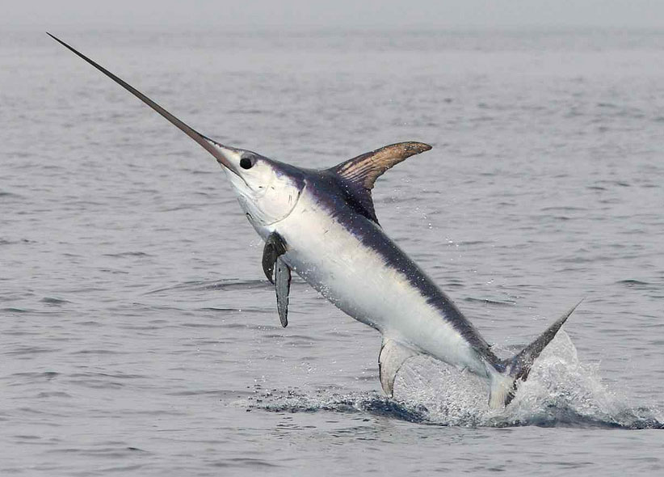
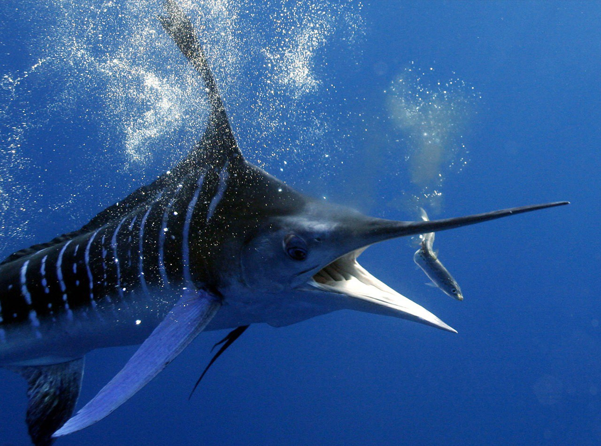

Меч-рыба[2][3], или меченос[3] (лат. Xiphias gladius), — вид лучепёрых рыб из отряда скумбриеобразных, единственный представитель[4] семейства мечерылых[3], или меч-рыб[3], или ксифиевых[5] (Xiphiidae). Крупные рыбы, длина тела которых достигает 4,55 м Перейти к разделу «#Описание». Могут поддерживать температуру мозга и глаз выше температуры окружающей среды за счёт эндотермииПерейти к разделу «#Терморегуляция». Активные хищники с широким спектром питанияПерейти к разделу «#Питание». Распространёны в Тихом, Атлантическом и Индийском океанахПерейти к разделу «#Ареал». Совершают протяжённые миграции. Ценная промысловая рыба. Мировые уловы превышают 100 тысяч тонн. Популярный объект спортивной рыбалки
Научная классификация Домен: Эукариоты Царство: Животные Тип: Хордовые Класс: Лучепёрые рыбы Отряд: Скумбриеобразные Семейство: Мечерылые (Xiphiidae Rafinesque, 1815) Род: Меч-рыбы (Xiphias Linnaeus, 1758) Вид: Меч-рыба
(Переходите на Рыбы 6
 